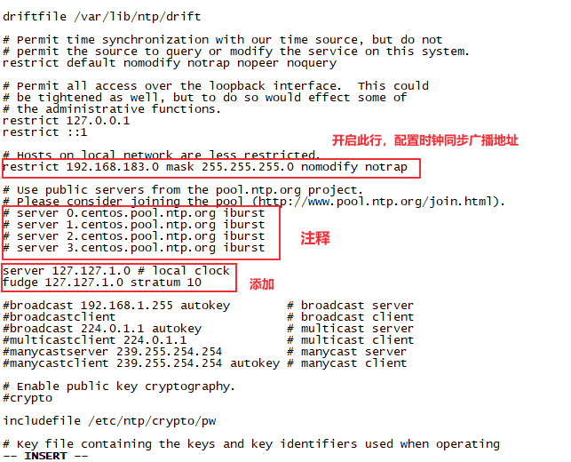

systemctl status firewalld systemctl status firewalld.service
停⽌止firewall
1
systemctl stop firewalld.service
禁止firewall开机启动
1
systemctl disable firewalld.service
关闭selinux
vi /etc/selinux/config
注释SELINUX=enforcing，添加SELINUX=disabled
1 2 3 4 5 6 7 8 9 10 11 12
# This file controls the state of SELinux on the system. # SELINUX= can take one of these three values: # enforcing - SELinux security policy is enforced. # permissive - SELinux prints warnings instead of enforcing. # disabled - No SELinux policy is loaded. # SELINUX=enforcing SELINUX=disabled # SELINUXTYPE= can take one of three values: # targeted - Targeted processes are protected, # minimum - Modification of targeted policy. Only selected processes are protected. # mls - Multi Level Security protection. SELINUXTYPE=targeted
时钟同步
ntpdate是一个linux时间同步服务软件，一般默认情况下是未安装。
1. 配置时间服务器
使用root⽤户
1 2
[root@linux .ssh]# ntpdate -bash: ntpdate: command not found
安装ntpdate：
1 2
yum -y install ntpdate yum -y install ntp
1 2 3 4 5 6 7
[root@linux ~]# systemctl status ntpd.service ● ntpd.service - Network Time Service Loaded: loaded (/usr/lib/systemd/system/ntpd.service; disabled; vendor preset: disabled) Active: inactive (dead) [root@linux ~]# rpm -qa | grep ntp ntpdate-4.2.6p5-29.el7.centos.2.x86_64 ntp-4.2.6p5-29.el7.centos.2.x86_64
编辑/etc/ntp.conf
vim /etc/ntp.conf
1 2 3 4 5 6 7 8 9 10 11 12 13 14 15
restrict 127.0.0.1 restrict ::1
# Hosts on local network are less restricted. restrict 192.168.183.0 mask 255.255.255.0 nomodify notrap
# Use public servers from the pool.ntp.org project. # Please consider joining the pool (http://www.pool.ntp.org/join.html). # server 0.centos.pool.ntp.org iburst # server 1.centos.pool.ntp.org iburst # server 2.centos.pool.ntp.org iburst # server 3.centos.pool.ntp.org iburst
server 127.127.1.0 # local clock fudge 127.127.1.0 stratum 10

保证BIOS与系统时间同步
vim /etc/sysconfig/ntpd ,添加：
1 2 3
# Command line options for ntpd OPTIONS="-g" SYNC_HWLOCK=yes